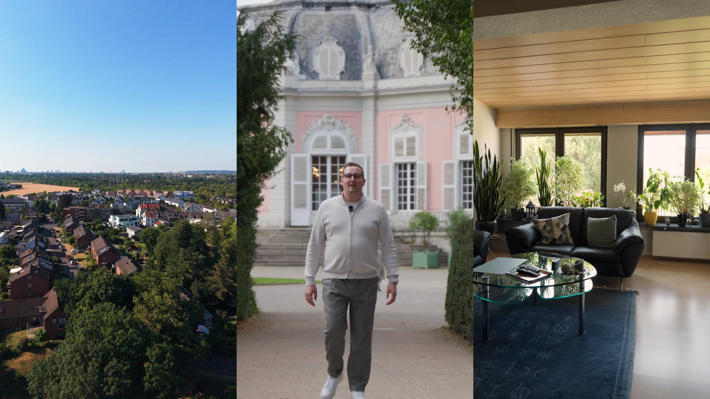
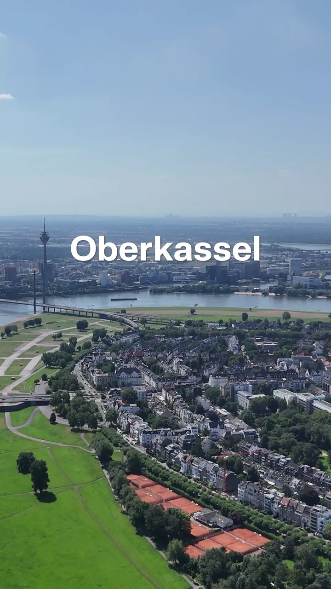
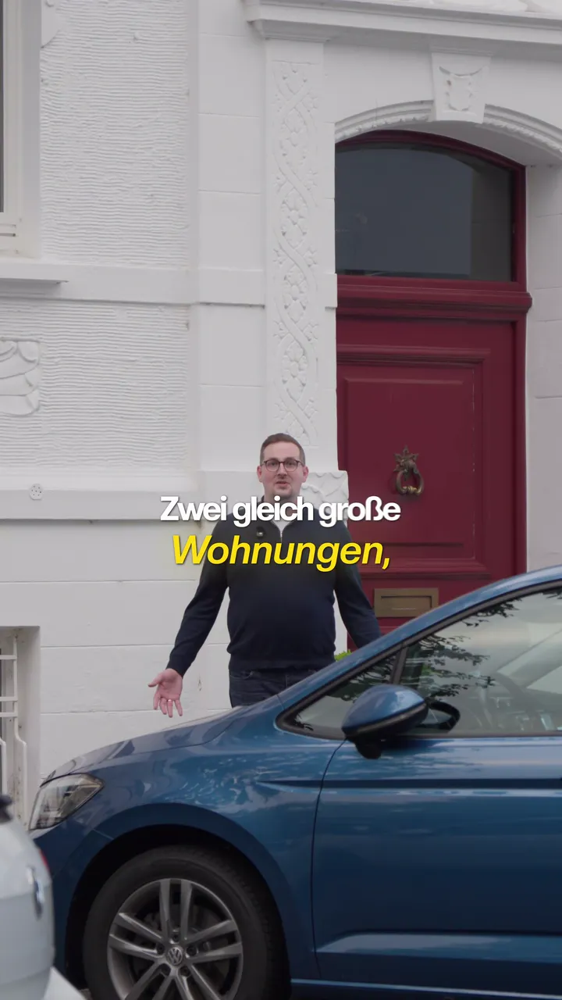
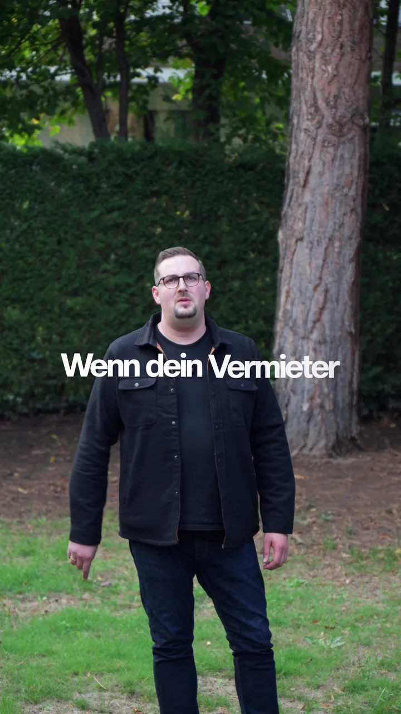
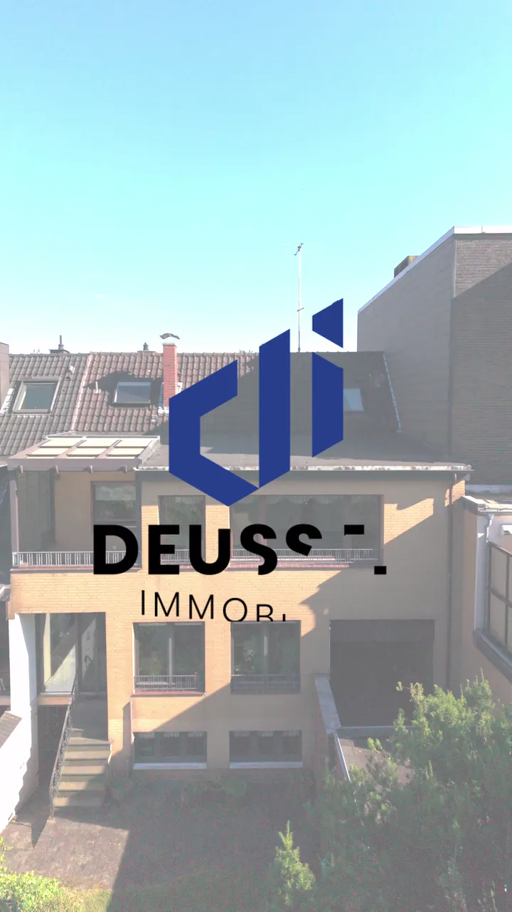

Auftrag · Social-Media-Betreuung · seit 2026
Für Deussen Immobilien produziere ich laufend Instagram-Reels mit Nicolai Berghaus: von der Themenplanung und dem Skript über den Dreh vor Ort bis zu Schnitt, Captions, Grafiken und Grading.
Feste Formate geben dem Kanal ein Gesicht — Stadtteil-Duell, Marktdaten, Marktnews und Exposé-Touren. Zahlen und Grafiken baue ich per Magic Mask hinter Nicolai auf, die Captions heben die Schlüsselwörter hervor, und jeder Schnitt sitzt auf der Sprache.
Jedes Reel wird nach sieben Tagen ausgewertet. Was funktioniert, fließt ins nächste Skript.
Für den besten Eindruck empfehle ich, die Qualität auf Maximum zu stellen.
Stadtteil-Duell · Benrath

Stadtteil-Duell · Oberkassel

Marktdaten · Baujahr

Marktnews · Mietspiegel

Exposé-Tour · Himmelgeist